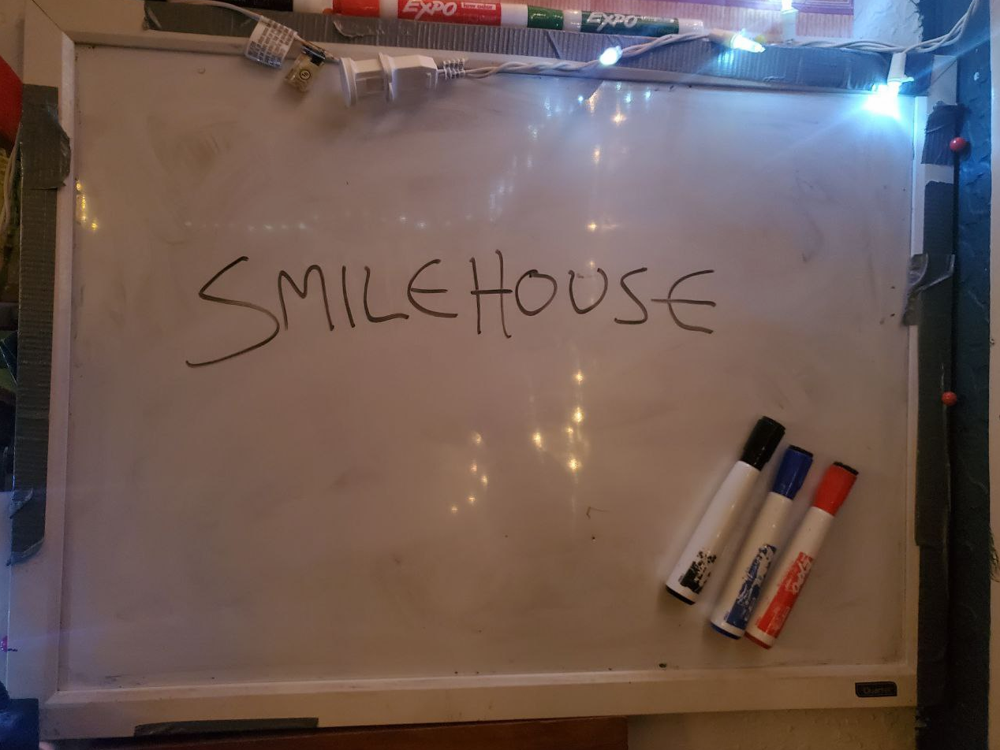

Index | Music
Hi! My name is Otto, aka Spirit Waves, aka tomoko, aka okomot (that's a whole bunch of aliases), and today, [date], is a red letter day, as it is the day that I finally relaunch SMILEHOUSE!
SMILEHOUSE has an interesting history. Initially an off-shoot for things unfitting for release on the currently defunct Visual Disturbances, with a very deliberate intention to essentially "send things out to die" via simply uploading a single zip and posting a link to a Twitter account, it now seems a fitting time for it to take on a life of its own.
I have decided to turn SMILEHOUSE into my own personal brand and label. With Visual Disturbances on a very indefinite and potentially permanent hiatus (at least labelwise, we still function as a now private community of close friends), I found myself really missing label work. I just plain love it. I love helping people release their music into the world, offering support, guidance, and encouragement, and cultivating a community of likeminded folks who are really intrigued by all of the stuff that's happening around them. For me, it was only a matter of time before I tried to start something up again, so I'm pleased to announce that the day has finally come. After much dreaming and plotting and revisiting my inspirations (The Elephant 6 Collective and Young God Records are two of the biggest that come to mind), it just feels right. SMILEHOUSE lives once more.
For those who were part of the Visual Disturbances community, you'll be pleased to know that you'll likely see familiar faces as well as a similar ethos, and a lot of similar concepts. It would be silly to not mention the connection as I think it will be pretty obvious. But, that being said, SMILEHOUSE, while being born from the ashes of Visual Disturbances, will also hopefully be charting its own unique course. There is no intention to simply make this "VD 2.0", despite much of the DNA of Visual Disturbances being present. Most of the similarities are because I am still friends with most of the same people, and I still have many of the same ideas about how to run a label that I had back then, but do not fear, as there are also new ideas, and over time you will start to see those come to fruition... You can't really spend seven or so years running a label and not expect to learn a thing or two, and I really hope to put those lessons into practice. Above all, I want SMILEHOUSE to be a thing that is built in collaboration with the people who opt to be part of it, and to serve as a platform from which we can all make our creative voices heard. That's the kind of beautiful, sappy, ambitious notion that I want to guide us wherever this new undertaking may lead.
For now, the first orders of business are to establish the community and release great music. The music page details the legacy of SMILEHOUSE thus far. You can find us on Twitter. As always, I'd love to hear your music, so if you have any you'd like to send for consideration, get in touch with star@smilehou.se.
Thanks for reading. There's more to come, so stay tuned. In the meantime, why not hop into our IRC and introduce yourself?